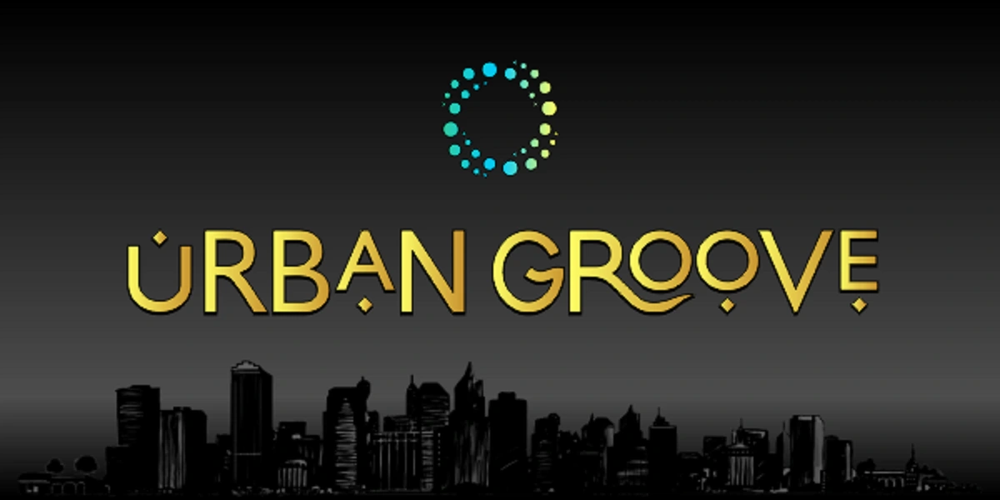
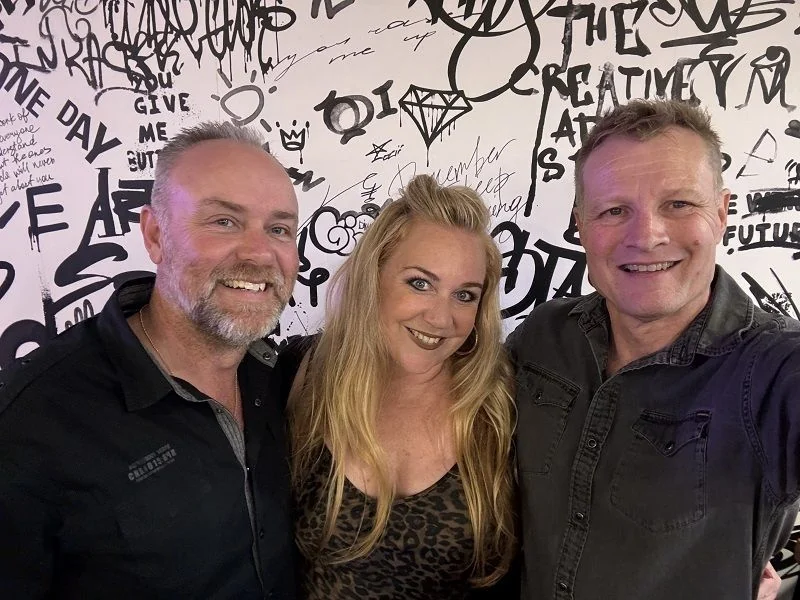

Weddings
Set the scene for the ceremony, settle into canapés, then turn the evening up. Discuss a package that follows your day.

MELBOURNE’S LIVE COVER TRIO

The songs you know. The night you’ll remember.
Rock, pop and acoustic favourites.

01 / YOUR NIGHT, YOUR TEMPO
From an easy acoustic welcome to a room singing the same chorus. Urban Groove brings Melbourne rock and pop to the moments worth getting together for.
Set the scene for the ceremony, settle into canapés, then turn the evening up. Discuss a package that follows your day.
A soundtrack for the catch-ups, the celebrations and the moment the work shoes become dancing shoes.
Familiar riffs, pop favourites and those “one more song” moments. Bring your people; find your chorus.
02 / LESS TALK. MORE MUSIC.
Two covers. One live sound.
A taste of what’s in the set.
Videos load from YouTube only when you press play. YouTube may use cookies. More performances on EntertainOz ↗
03 / YOUR NEXT FAVOURITE CHORUS
Big singalongs or a softer landing.
Find a familiar name in the mix.
Loading repertoire…
SONG / FEATURED ARTISTAdapted from the published EntertainOz repertoire. Artist credits identify the listed versions, not songwriting credits. “Chilled set” follows their Urban Blues selection. Confirm songs and requests when booking.


04 / MEET THE SOUND
Voice, guitar and drums. A Melbourne trio with a repertoire that moves between intimate acoustic moments and rock-and-pop favourites.
Lineup named in the EntertainOz profile and a 2026 Cyan venue listing. Please confirm the musicians for your event when enquiring.
More from Urban Groove on CrowdPleaser ↗THE PRACTICAL BIT
The published CrowdPleaser profile lists PA, lighting and music between sets, with MC services on request. Confirm your venue’s needs and package inclusions with the booking provider.
CrowdPleaser describes wedding packages spanning ceremony, canapés and evening entertainment. Share your running order and discuss the right format for each moment.
Your date, venue and suburb, occasion, approximate guest numbers, performance times and preferred mood are a great start. Ask about setup access, power and any special song requests.
GOT A DATE IN MIND?
Tell us where, when and what you’re celebrating.
Enquire through a published booking profile.